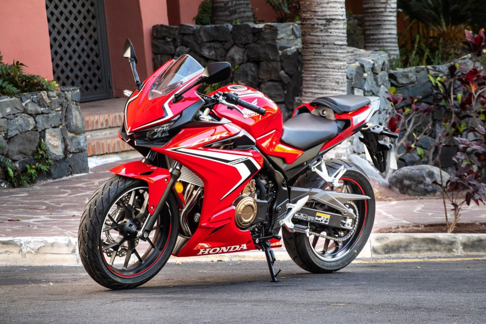

Bekenste modellen
- 1990 honda cbr250rr.
- specificaties:
- pk: 45 pk
- koppel: 23 nM
- motorinhoud: 249cc 2-cilinder
- topsnelheid: 180 km/h
- 0-100 km/h: 4.7 seconden
- om het prachtige geluid van deze motor te horen klik hier
- 2022 honda cbf500.
- specificaties:
- pk: 56 pk
- koppel: 45 nM
- motorinhoud: 499cc 4-cilinder
- topsnelheid: 201 km/h
- 0-100 km/h: 4.3 seconden
- 1979 Honda cbx.
- specificaties:
- pk: 105 pk
- koppel: 71 nM
- motorinhoud: 1000cc 6-cilinder
- topsnelheid: 225 km/h
- 0-100 km/h: 4.6 seconden

- 2012 Honda cbf1000.
- specificaties:
- pk: 60 pk
- koppel: 97 nM
- motorinhoud: 1000cc 4-cilinder
- topsnelheid: 230 km/h
- 0-100 km/h: 3.5 seconden
- 2021 honda gl1800 goldwing.
- specificaties:
- pk: 125 pk
- koppel: 170 nM
- motorinhoud: 1800cc 6-cilinder boxer
- topsnelheid: 180 km/h
- 0-100 km/h: 3.6 seconden
- 2021 honda cmx rebel 500.
- specificaties:
- pk: 46 pk
- koppel: 43 nM
- motorinhoud: 500cc 2-cilinder
- topsnelheid: 170 km/h
- 0-100 km/h: 5.5 seconden
Bekenste modellen

- 1996 honda blackbird cbr 1100 xx.
- specificaties:
- pk: 146 pk
- koppel: 125 nM
- motorinhoud: 1137cc 4-cilinder
- topsnelheid: 284 km/h
- 0-100 km/h: 2.8 seconden
- 2021 honda msx 125 grom.
- specificaties:
- pk: 10 pk
- koppel: 10 nM
- motorinhoud: 125cc 1-cilinder
- topsnelheid: 117 km/h
- 0-100 km/h: 25.4 seconden
- 1965 honda supercub 50.
- specificaties:
- pk: 2 pk
- koppel: N/A nM
- motorinhoud: 50cc 1-cilinder
- topsnelheid: 40 km/h https://www.motorbikecatalog.com/model/honda/50_c110.html
- 2021 honda cbr 1000 rr fireblade.
- specificaties:
- pk: 215 pk
- koppel: 113 nM
- motorinhoud: 999cc 4-cilinder
- topsnelheid: 330 km/h (zonder begrenzer)
- 0-100 km/h: 3.0 seconden

- 2021 honda cbr 600 rr.
- specificaties:
- pk: 119 pk
- koppel: 64 nM
- motorinhoud: 599cc 4-cilinder
- topsnelheid: 261 km/h
- 0-100 km/h: 3.4 seconden

- 2021 honda cbr 500 r.
- specificaties:
- pk: 47 pk
- koppel: 43 nM
- motorinhoud: 471cc 2-cilinder
- topsnelheid: 185 km/h
- 0-100 km/h: 5.3 seconden